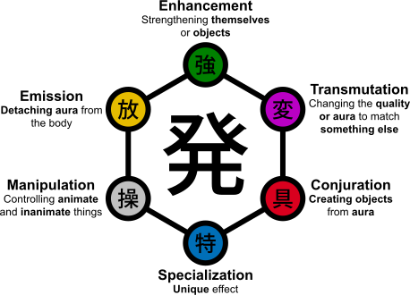

Hay seis tipos de aura dependiendo de la personalidad, cada individuo nace con uno de estos seis tipos diferentes de aura. Al enterarse de su propio tipo de aura, un estudiante de Nen se dedica a aprender a aplicar la técnica de una manera única que se adapte a su personalidad, puede convertirse en una habilidad única.
Si un estudiante aumenta la cantidad de agua en el vaso durante su prueba del agua, es de Intensificación (強化系, Kyōkakei). La Intensificación es la habilidad de usar el aura para incrementar las habilidades de un objeto o el propio cuerpo. Por lo tanto, los intensificadores son capaces de aumentar en gran medida su ataque físico y defensa, y son los más adecuados para el combate cuerpo a cuerpo.
Si un estudiante cambia el sabor del agua durante su prueba del agua es un Transformador (変化系, Henkakei). Una afinidad por Transformación significa que una persona puede cambiar las propiedades de su aura para imitar algo mas. Similares a los de Materialización, las "cosas" creadas por Transformación son aura pura. Éstos dos tipos suelen confundirse debido a sus similitudes, pero una forma simple de comprender cuál es la diferencia sería que la Transformación permite al aura imitar las propiedades de una sustancia, mientras que la de Materialización permite, justamente, materializar el aura en sustancias reales. Los Transformadores pueden copiar las propiedades de las cosas reales. Por ejemplo, Killua Zoldyck usa su aura para copiar las propiedades de la electricidad. Los Transformadores pueden dar a sus propiedades de aura que no imitan necesariamente cosas reales; la "Bungee Gum" de Hisoka copia y combina las propiedades del caucho y goma. Las sustancias creadas son invisibles para las personas que desconocen la existencia de Nen.
Si un estudiante hace aparecer impurezas en el agua del vaso durante su prueba ellos son Materialización (具現化系, Gugenkakei). Los Materializadores tienen la capacidad para crear un objeto independiente del material físico fuera del aura de una persona. Una vez que una persona ha dominado la materialización de un determinado objeto, pueden invocarlo y disiparlo en un instante, cuando lo deseen. Los materializadores son los únicos que con el Nen puede crear cosas que la gente común (inconscientes del Nen) pueden ver y tocar. Además, los objetos o las entidades creadas con esta técnica tienen una "independencia" sutil para ellos. Esto significa que pueden seguir existiendo incluso si estuvieran a una distancia considerable del usuario, o incluso si el usuario mismo no es consciente de que aún no se han desmaterializado. Sin embargo el uso de In puede ocultar un objeto materializado de aura de los usuarios experimentados de Nen. Los objetos materializados pueden tener habilidades especiales imbuidas en ellos. Por ejemplo, la miembro del Gen'ei Ryodan, Shizuku, es capaz de invocar una aspiradora que puede aspirar infinitamente objetos, pero con la condición de que no se pueden aspirar seres vivos y cosas hechas de Nen. Similar la manipulación, las habilidades del Materializador tienden a ser muy específicas, complejas y condicionales. Las condiciones pueden estar imbuidas en objetos creados para hacerlos más fuertes. Kortopi , por ejemplo, es capaz de materializar una copia perfecta de cualquier objeto inanimado que él toca. Sin embargo, las copias de todos los objetos generados desaparecerán automáticamente después de 24 horas.
Si un estudiante cambia el color del agua en el vaso durante su prueba del agua, es un Emisor (放出系, Hōshutsukei). Una afinidad por Emisión significa que un usuario es capaz de controlar el despliegue de su aura mientras lo separa de su cuerpo. El aura generalmente disminuye en intensidad muy rápidamente cuando se separa del cuerpo, pero los Emisores fuertes pueden separar su aura de su cuerpo por largos períodos de tiempo y aún así ser capaces de mantenerla.
Si un estudiante mueve la hoja flotando en el agua del vaso durante su prueba del agua, es un Manipulador (操作系, Sōsakei). Las Habilidades pertenecientes a los manipuladores permiten al usuario controlar a seres vivos o no vivos (personas, objetos, etc.), en cierto modo, la principal ventaja de ser capaz de "manipular" a los enemigos. El grado de manipulacion se determina principalmente por la condición de que por lo general pone al manipulador en riesgo (adjuntando objetos sobre el enemigo, tocando al enemigo de una manera determinada) y, por supuesto, cuanto mayor sea el riesgo, mayor el grado de manipulación y el tamaño varía dependiendo de la habilidad ya que tiene un limite de que puedes controlar ya que el mínimo de tamaño es de 1 milímetro como la estructura más pequeña pero el tamaño máximo como la estatura más grande no varía puede ser cualquier objeto de cualquier tamaño pero dependería de tu habilidad usando manipulación como dijo la madre de killua en la saga de continente oscuro.